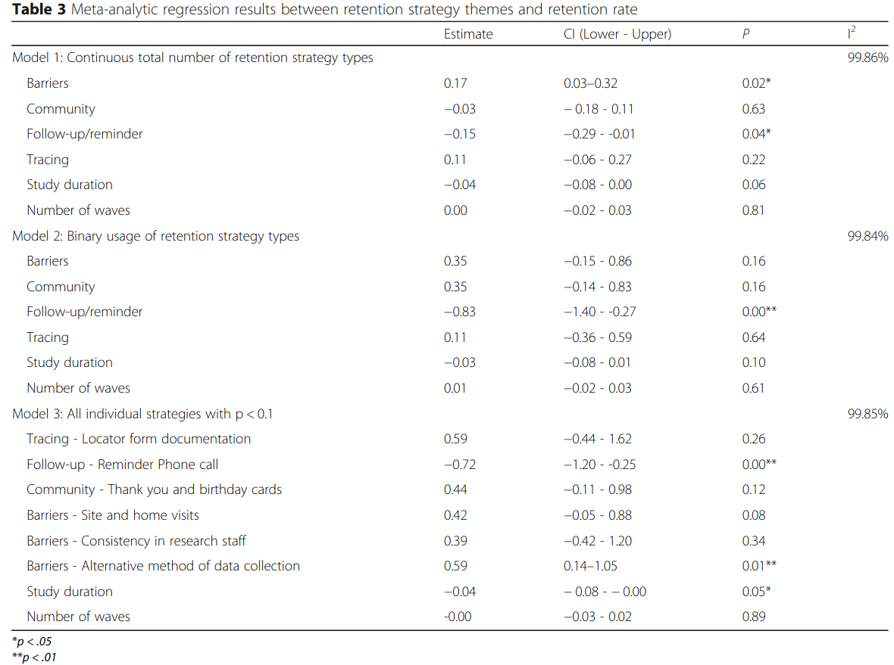

7 Missing Data
Only the beauty of what is missing can endure. – Source unknown
This chapter is an other “stub” that I am slowly working on. The few things I’ve added, though, seemed worthwhile enough to make this one public.
7.1 Missing Data: More Than Just a Smaller Sample
7.1.1 Sources of Attrition
The difference between MAR and MCAR is not trivial. Data may be missing for real and even evident reasons, but these reasons may not necessarily affect the conclusions we draw from them. In a review of attrition among new mothers participating in a 15-year study, Gustavson et al. (2012) found that education levels were lower amount those who dropped out, suggesting important sources of bias for generalizations of their results to other populations. However, those who dropped out did not differ in terms of the psychological and interpersonal/social factors central to their study. They also found that attrition did not affect the associations between those central variables. Their results suggest that even systematic biases in attrition may not significantly affect our conclusions—even if this is normally impossible to test and confirm.
Citing Davis et al. (2002), Teague et al. (2018, p. 1) similarly noted noted that “[s]ystematic attrition in longitudinal research occurs most often in older, non-white male participants with limited education and/or multiple health problems. Long duration and repeated assessments can also increase attrition due to the significant burden on participants.” Nonetheless, it may be useful to consider more broadly the factors found to be associated with attrition. Gustavson (2012, p. 2) provides a nice review of such factors within field-based health research:
Socio-demographic variables, such as low educational level, being out of work, and not being married, are typically related to increased risk of non-response and attrition in epidemiological studies [2,4,5,8-12]. In addition, unhealthy life style factors, such as smoking, high alcohol consumption, and physical inactivity, are related to non-participation and attrition [8,11-13].
High levels of psychological distress can predict attrition in high-risk populations, such as psychiatric outpatients and former hospitalized patients [3,14]. In populationbased studies, psychological distress has been found to have no effect or a weak to moderate effect on attrition after adjusting for other variables [2,4,9,10]. Attrition may also be related to social factors, such as support from spouse or friends, and child’s characteristics. Poor relationship quality is an important predictor of mental health problems [15]. However, social networks and support did not predict attrition in a 15-year follow-up study [5], and marital satisfaction and spousal support did not predict attrition in a job satisfaction study [6]. More knowledge is needed about the association between attrition and psychological as well as social factors.
Studies with high-risk populations found that externalizing problems and psychopathology in general among children were associated with a higher risk of parents dropping out [16,17], whereas child characteristics such as temperament, anxiety, and attention problems did not predict attrition in population-based studies [18,19]. It may be that the ways different factors affect attrition are dependent on whether the original sample was drawn from a high-risk population.
7.1.2 Addressing Attrition
Teague et al. (2018) conducted a meta-analysis of factors contributing to and reducing attrition in a rather wide range of longitudinal, field-based studies. They found that:
after controlling for study duration and number of waves, studies that utilised any barrier-reduction strategy had higher retention rates than those that did not use a barrier strategy (median retention using barrier strategies = 81.1%; median retention not using barrier strategies = 70.7%; b = 0.61, p = .01). Again after controlling for the study duration and number of waves, surprisingly, articles that reported use of at least one follow-up/reminder strategy had lower retention rates when compared to studies that did not utilise any follow-up/reminder (median retention using follow-up/reminder strategies = 76.4%; median retention not using follow-up/reminder strategies = 86.1%; b = −0.32, p < .01). No relationships were found between retention rate and the use of any community-building or tracing retention strategies” (p. 11)
Further details about what did and did not affect retention are in this reproduced table:

- Missing data
- Good review of caveats with Little’s test in description
- https://www.sciencedirect.com/science/article/pii/S0895435618308710
- https://www.researchgate.net/deref/http%3A%2F%2Fwww.talkstats.com%2Fshowthread.php%2F17506-Multiple-Imputation-or-FIML
- https://www.researchgate.net/profile/Rafael-Garcia-26/post/What_proportion_of_missing_data_is_too_big_for_multiple_imputation_in_longitudinal_data/attachment/59d63c7179197b80779996d4/AS%3A415701081837568%401476122269218/download/GCA+APS+2007+-+Revision+2013+%281%29.pdf
- https://www.researchgate.net/deref/http%3A%2F%2Fwww.personal.psu.edu%2Fjxb14%2FM554%2Farticles%2FSchafer%2526Graham2002.pdf
- Chapter 9 in Snijders, T. A. B., & Bosker, R. J. (2012). Multilevel Analysis: An introduction to basic and advanced multilevel modelling. London: Sage
- https://www.stats.ox.ac.uk/~snijders/mlbook.htm